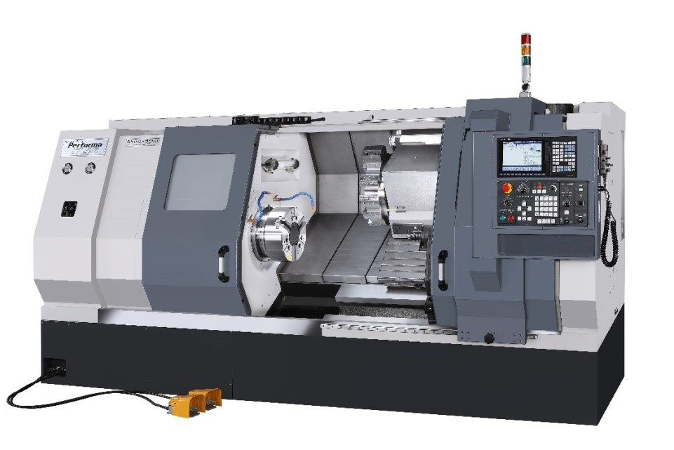
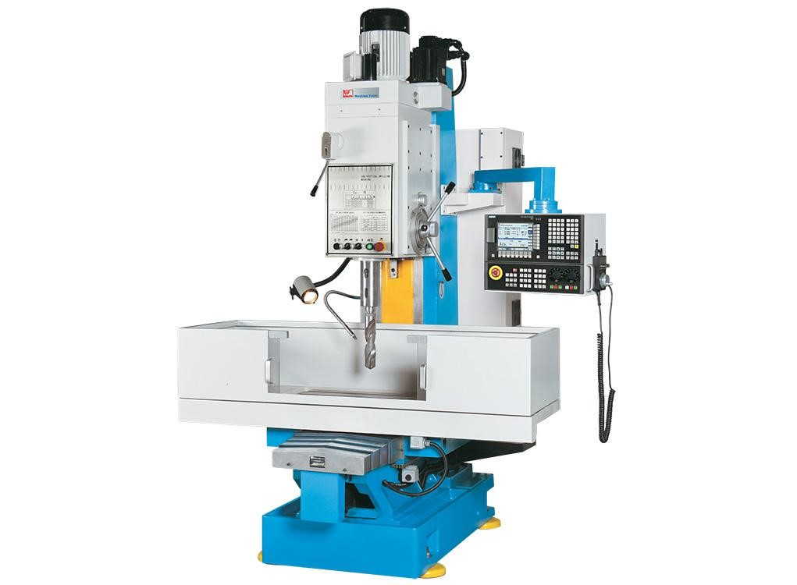
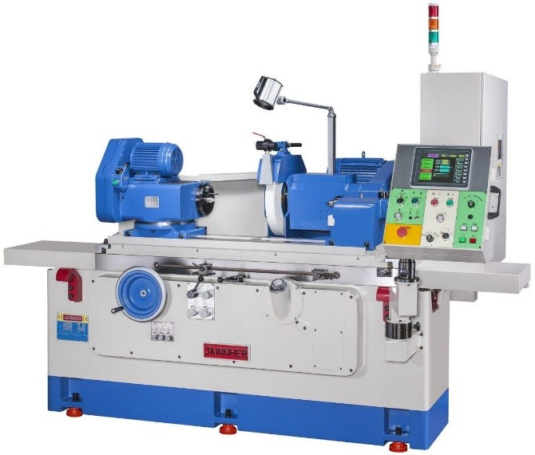
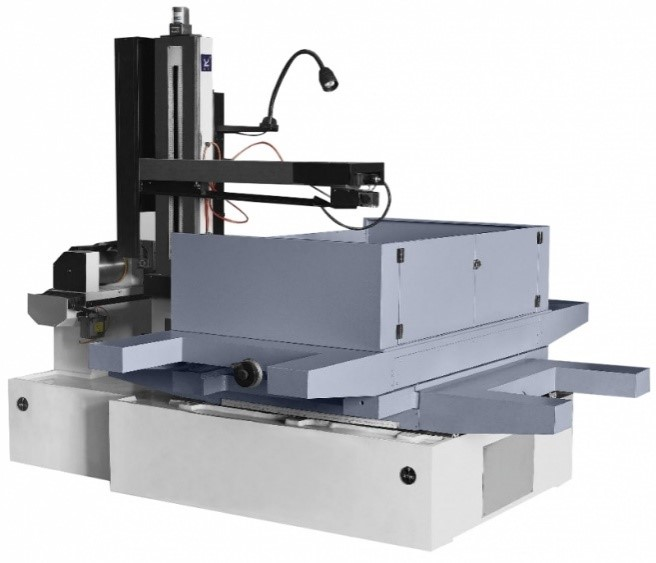
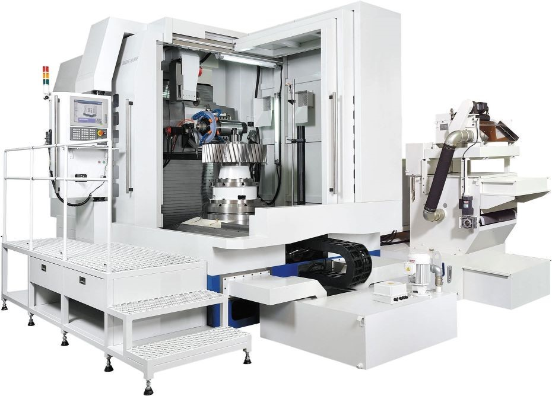
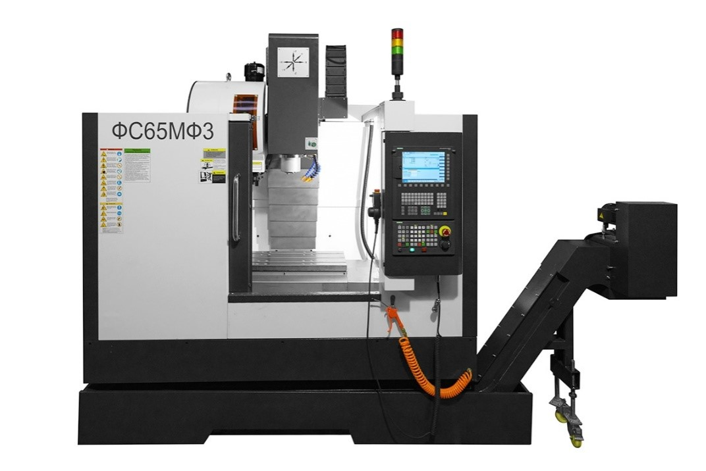
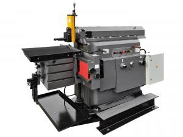
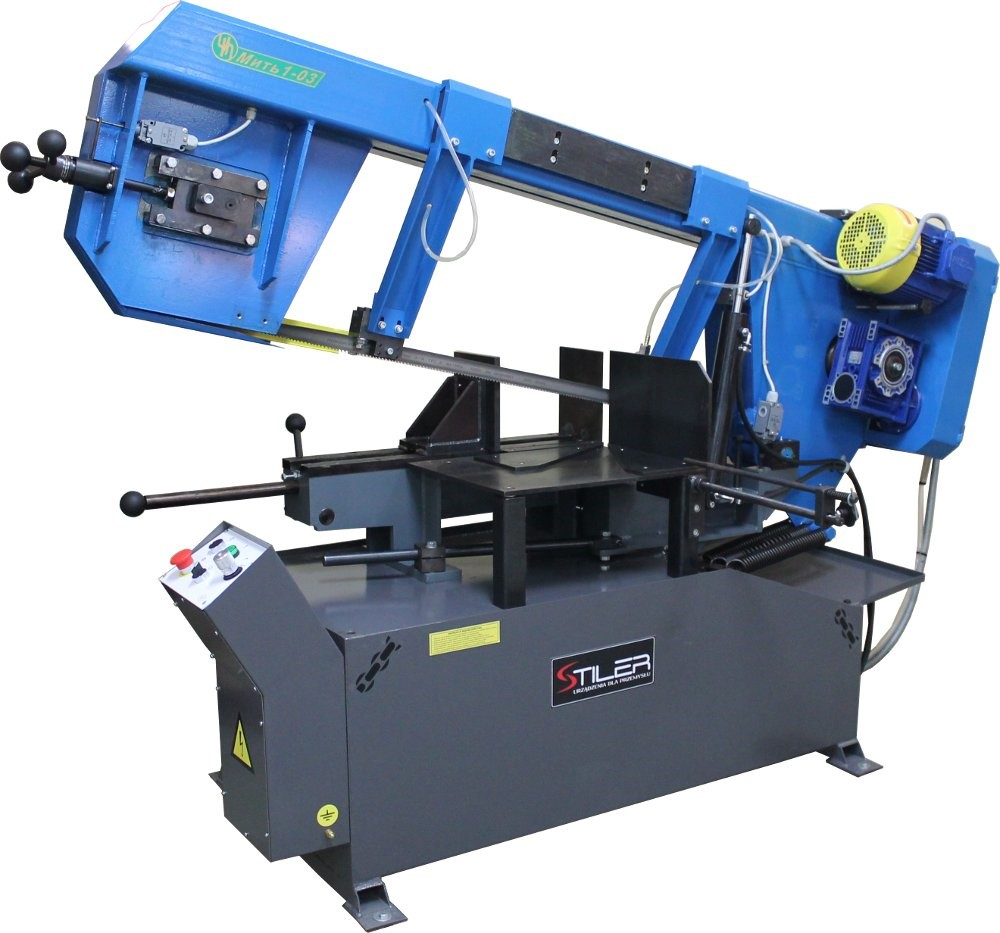
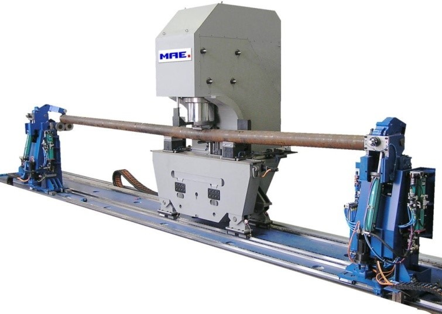

Динамическая инфографика

Металлорежущий станок – оборудование, на котором на котором путем снятия
припуска
с заготовки в виде стружки получают деталь с
заданными размерами, формой, взаимным расположением и шероховатостью
поверхностей
Виды (группы) металлорежущих станков:
1 - токарные

2 - сверлильные и расточные

3 - шлифовальные, полировальные, доводочные, заточные

4 - электрофизические и электрохимические

5 - зубо- и резьбообрабатывающие

6 - фрезерные

7 - строгальные, долбежные, протяжные

8 - разрезные

9 – разные

В свою очередь, каждая группа подразделяется на 10 типов (подгрупп), характери¬зующих назначение станков, их компоновку, степень автоматизации или вид применяе¬мого инструмента.
Для измерения величины R переключатель выставляют в диапазон Ω. В комплекте к такому прибору идет один комплект щупов, имеющих разную расцветку. Принято красный щуп вставлять в отверстие com, а черный – VΩCX+.Классификация металлорежущих станков по классу точности:
Классификация металлорежущих станков по массе:
Классификация металлорежущих станков по степени автоматизации:
Классификация металлорежущих станков по степени специализации:
При выборе металлорежущего оборудования необходимо учитывать:
Техническая характеристика станка должна отвечать требованиям:
При проектировании технологических процессов выбирают наиболее технически и
экономически подходящее оборудование. Как правило, в единичном производстве
используется универсальное оборудова¬ние, в мелкосерийном - станки с ЧПУ и
универсальные, в среднесерийном - станки с ЧПУ и обрабатывающие центры. В
крупносерийном - станки с ЧПУ, обрабатывающие центры, полуавтоматы, автоматы. В
массовом производстве - обрабатывающие центры, автоматы, автоматические линии,
роторные и роторно-конвейерные линии.
Режущий инструмент – инструмент, предназначенный для изменения формы и размеров
заготовки
путём удаления
части материала в виде стружки с целью получения готовой детали или
полуфабриката.
По характеру обработкирежущие инструменты различают:
По конструктивному исполнению они могут быть:
В зависимости от формы обрабатываемой поверхности лезвийный инструмент подразделяется на:
Резцы токарные в зависимости от обрабатываемой поверхности могут быть:
Сверла используются для получения отверстий в сплошном материале или для их
рассверливания
Зенкеры и развертки применяют для обработки отверстий с целью повышения их
качества
Цековки - для обработки торцовой поверхности отверстий
Все эти инструменты с успехом применяются как на сверлильных, так и на
токар¬ных станках
Фрезы, в зависимости от формы обрабатываемых поверхностей, могут быть:
Протяжки и прошивки бывают:
Зубообрабатывающий лезвийный инструмент в зависимости от методов обработки зубьев (копирования или обкатки) подразделяют на:
Резьбообрабатывающий инструмент в зависимости от размеров и положения ци¬линдрической поверхности (наружная или внутренняя) подразделяют на:

Комбинированный инструмент чаще всего изготавливается для обработки отвер¬стий:
При подборе материала для изготовления режущей части инструмента требуется учитывать следующие критерии:
При выборе режущего инструмента необходимо учитывать:
Режущие инструменты (особенно для станков с ЧПУ) должныобладать высокой режущей способностью (стабильной размерной стойкостью при высоких режимах резания), обеспечить возможность быстрой и удобной замены, наладки в процессе работы, формировать транспортабельную стружку и отводить ее от зоны обработки без нарушения нормальной работы оборудования
В качестве материала режущей части применяют:
Технологические приспособления – вспомогательные устройства к технологическому
оборудованию, используемые при выполнении операций механической обработки,
сборки и контроля
По целевому назначению приспособления делят на:
По степени специализации приспособления делят на:
По степени механизации и автоматизации приспособления подразделяют на:
Выбор технологических приспособлений зависит от формы, габаритных размеров и технических требований, предъявляемых к обрабатываемым деталям, а также от типа производства и программы выпуска изделий.
Выбор типа приспособления в основном зависит от серийности производства.
В условиях единичного и мелкосерийного производства экономически выгодны универсальные приспособления систем УБП и УСП, ручные.
В условиях серийного и крупносерийного производства - специализированные приспособления систем СНП, СРП и УНП, механизированные и автоматизированные.
В условиях массового производства - специальные приспособления системы НСП, автоматические.
При обработке заготовок на автоматических линиях используются приспособления-спутники, которые одновременно служат и для транспортировки заготовки с одной позиции на другую.
Измерительные инструменты - специальные устройства для точного определения размеров, а также других геометрических характеристик деталей и предметов
В зависимости от назначения применяют следующие измерительные инструменты:
Правильный выбор измерительного инструмента обеспечивает получение достоверной информации об измеряемом объекте, позволяет оптимизировать затраты производства на контрольные операции
При выборе измерительного инструмента необходимо учитывать:
Правильный выбор измерительного инструмента обеспечивает соответствие его метрологической характеристики:
На выбор средств измерений влияет характер производства:

Федеральный государственный образовательный стандарт среднего профессионального образования по специальности 15.02.16
Технология машиностроения, утвержден Приказом Минпросвещения России от 14 июня 2022 г. № 444
ПОП Профессионалитета
15.02.16 Технология машиностроения
ПМ. 01
Разработка технологических процессов изготовления деталей машин
МДК 01.01
Разработка технологических процессов изготовления деталей машин с применением систем автоматизированного проектирования
Раздел
Технологические процессы изготовления деталей машин
Тема
Выбор оборудования, инструмента и технологической оснастки
Ключевые слова
Оборудование - любое необходимое производству машины или приборы.
Технологическая оснастка - средства технологического оснащения, дополняющие технологическое оборудование, для выполненияопределенной части технологического процесса.
Измерительный инструмент - специальное устройство для точного определения размеров, а также других геометрических характеристик деталей и предметов.
Станочные приспособления - дополнительные оборудования к металлообрабатывающему станку, предназначенные для закрепления в нем обрабатываемой заготовки и надежной связи его со станком.